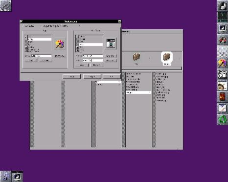
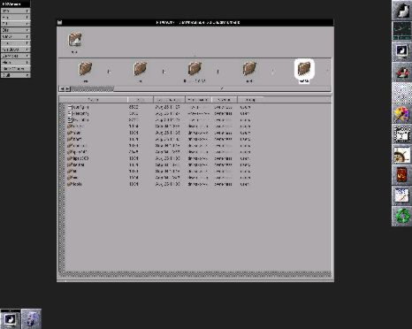

|
por Georges Tarbouriech Sobre el Author: Georges es un usuario viejo de Unix (comercial o libre). Trabaja en medio de una pequeña decena de SO entre los cuales se encarga de administración de redes, desarollos, sistemas... Para variar los placeres, su tiempo libre está dedicado a sus dos viejos ordenadores (Amiga y NeXT) y a proyectos que se refieren al software libre. Contenidos: |
Resumen:
FSViewer es un gestor de ficheros con el aspecto de NeXT y funcionando bajo WindowMaker.
Entre las herramientas revolucionarias de NeXTStep, la primera por orden de aparición en pantalla era indiscutiblemente el File Viewer. Se abría al arranque del sistema y permitía moverse entre directorios y ficheros de un modo muy agradable. La innovación era que uno siempre sabía dónde se encontraba, gracias al camino de iconos. Más que un gestor, era un verdadero navegador, que podía visualizar en diferentes modos: iconos, listas y browser.
Dentro de la serie, NeXTStep está de vuelta, hablaremos tambien del WindowMaker, FSViewer es una aplicación que reproduce el famoso File Viewer.
En el momento de escribir éste artículo, la versión de FSV es la 0.2.3. Y el aspecto de FSV se parece al de su modelo hasta el punto de confundir. Pero las similitudes no paran aquí.
FSV se basa principalmente en la librería WINGs, que da a las aplicaciones el
aspecto de NeXT, y de ahí viene la estrecha relación con WindowMaker.
El autor, George Clernon, empezó éste proyecto un poco como un juego, y por suerte para
nosotros ha proseguido su trabajo. Sobre la parte artística; los iconos de
FSViewer, my-computer y de los directorios son obra de Marco van Hylckama Vlieg.
Hay otras versiones de gestores de ficheros basados en el File Viewer del NeXT, principalmente el del proyecto GNUStep (http://www.gnustep.org) o Wmfinder (http://www.imago.ro/wmfinder). Entonces, ¿por qué precisamente éste? ¡Porque se instala muy fáilmente! Debido a que no necesita GNUStep o Qt.
El File Viewer del NeXT
FSViewer se encuentra en: http://www.csn.ul.ie/~clernong/download/
Una vez bajado el archivo, se descomprime con "tar zxvf FSViewer.app-0.2.3.tar.gz" y se puede empezar con la compilación como siempre:
./configure
make
make install
Si no pueden ser "root", las instrucciones son ... la documentación.
¡Ven como tenían que leerla!
Ojo con la profundidad de colores de la pantalla.
Si visualizan en modo 8 bits, tendrán que compilar
desactivando el reloj (--enable-clk=no).
¡¡¡Solo se trata del iconito del reloj!!!
Pero, por mala suerte, éste magnífico reloj NeXT
no se visualiza en modo 8 bits. Si compilan sin desactivarlo,
cada vez que abran una ventana en la cual aparece, tendrán
el placer de obtener un espléndido "core dump".
¡¡¡Han sido avisados!!!
Aunque, si tienen ganas, nada impide tratar de modificar el código
para visualizar el reloj en modo 8 bits (tendrán que crear un
nuevo icono). Para los perezosos, hay paquetes RPM, DPKG... Y algunas
direciones útiles son:
ftp://ftp.falsehope.com/pub/fsviewer
ftp://ftp.tux.org/pub/sites/ftp.falsehope.com/fsviewer
ftp://ftp.freshmeat.net/pub/rpms/fsviewer
FSV se configura a partir del menú Preferences. Esta ventana modifica el fichero de configuración por defecto. Se puede también modificar directamente el fichero si se sabe lo que se está haciendo. Si instalan una actualización de FSV, después de compilar, tendrán que ejecutar el comando chdef situado en el directorio defs de FSV.
La ventana Preferences tiene tres partes: variables, aplicaciones y tipos de ficheros, discos. En la primera parte pueden elegir imágenes por defecto, los ejecutables y las características de la pantalla. En la segunda, desde la parte izquierda, se seleccionan las aplicaciones que quieren arrancar a partir de FSV y desde la parte derecha, los tipos de ficheros abiertos con las diferentes aplicaciones. Por ejemplo, si en la parte izquierda tienen los ejecutables Netscape y Nedit, en la derecha pueden especificar que los ficheros .html serán visualizados con Netscape y editados con Nedit. En la tercera, pueden añadir las unidades removibles como el CD-RROM o unidades ZIP para poder montarlos (o desmontarlos, o eyectarlos) a partir de FSV.

Preferencias de FSViewer (1280x1024)
La ventana principal de FSV se divide en tres partes. Desde arriba hacia abajo: el estante, el camino gráfico y la ventana de navegación.
- El estante
Es una zona en la cual colocar objetos tales como ficheros o directorios para
facilitar el acceso. Pueden usarla como un almacén temporal para copiar o
mover ficheros o directorios.
Su dimensión puede ser modificada tirando en el "gadget" (la bolita).
Los objetos contenidos en el estante pueden ser ejecutados o visualizados, según el tipo,
pinchando en ellos.
- El camino gráfico (o camino de iconos)
Como indica su apellido, representa el camino (path) actual en forma de iconos.
Así pueden saber a donde se encuentran en medio del árbol. Los objetos
situados en éste camino pueden ser ejecutados o visualizados con doble-click.
El "drag and drop" permite moverlos facilmente.
- La ventana de navegación
Visualiza en columnas el contenido de cada directorio seleccionado. Un
directorio se distinge por la pequeña flecha a su derecha. Pinchando sobre
el directorio permite seleccionarlo y visualizarlo en la columna siguiente,
añadiendo el icono correspondiente en el estante.
El contenido de las columnas puede ser filtrado y clasificado.
La vista en esta ventana también puede presentarse en forma de lista (como ejecutando
el comando ls -l). Esta opción se obtiene desde el elemento View del menú.

Visualización en forma de lista (1280x1024)
- El menú
Los elementos del menú corresponden a todas las acciones posibles en FSV. Los
atajos indicados se obtienen con una combinación de la letra visualizada y de
la tecla Meta. Muy a menudo, la tecla Alt sustituye a la tecla Meta.
Si la letra del abreviado es mayúscula, tendrán que usar Alt-Shift y la letra.
- El inspector
Esta ventana se compone de cinco partes accesibles con el "gadget": atributos,
iconos, visualizador, editor y ejecutable. Se puede llegar a esta ventana
desde el menú Tool.
Al seleccionar un fichero, se puede visualizar o modificar:
Como cada gestor de ficheros, FSV permite cambiar el nombre, suprimir, copiar,
mover ficheros o directorios. El "drag and drop" se basa en Offix DND.
Las Preferencias permiten una personalización fácil de la aplicación. Se
obtienen desde el menú Info, que también dispone de una ventana con información
y un panel relativo a la licencia GPL. La opción de ayuda todavía no funciona.
La documentación incluida en la distribución está en inglés y en francés,
y hay una versión HTML en el site disponible para su descarga.
El menú File tiene opciones para crear un nuevo directorio, para duplicar y para
comprimir o descomprimir.
En el menú Edit, se encuentran los inevitables copiar, cortar, pegar y una opción para
borrar.
Montar y desmontar los periféricos removibles es posible desde el elemento de menú 'Disk'.
Por el momento, FSV solamente puede visualizar en forma de lista o de nombres,
aunque la visualización en forma de iconos tendría que aparecer pronto.
El menú View permite seleccionar el tipo de visualización.
En éste menú pueden definir el orden de clasificación o las condiciones de filtro.
Y también permite actualizar la pantalla despu&eacue;s de llevar a cabo
modificaciones.
Desde el menú Tools, se lanza el inspector pero también pueden abrir un shell, ejecutar top
o buscar ficheros o directorios.
El menú Services permite la ejecución de las mismas acciones que el ratón en la ventana principal.
Pueden pedir la edición, la visualización, la ejecución de un fichero según su tipo.
Aquí pueden cambiar los nombres de ficheros y definir los enlaces simbólicos.
En su lista de prioridades, George Clernon puso en primer lugar la selección multiple de ficheros. Esta opción, muy practica para mover o copiar, es bastante difícil a realizar teniendo en cuenta la orientació elegida al comenzar a crear la aplicación.
Entre otras mejoras, George ha previsto una visualización en forma de iconos, el soporte del "recycler" (el cubo de basura del NeXT), un interfaz para PGP que permita encriptar desde FSViewer...
Obviamente, esta lista no es exhaustiva.
Para concluir, repetimos la versión actual es 0.2.3. FSViewer es perfectamente usable así. Claro que tiene lagunas en comparación con herramientas más viejas. Sin embargo, tiene ese aspecto que le gusta a la gente a la que le gusta NeXT.
De todos modo, funciona bajo WindowMaker, y quienes han elegido este producto, frecuentemente lo hicieron por el aspecto. Y FSViewer se integra muy bien en éste contexto.
Personalmente me gusta mucho, y lo que me agrada aún más es la disponibilidad de su autor para escuchar a los usuarios.
¡Anda, por qué resistir la tentación!
|
Contactar con el equipo de LinuFocus
© Georges Tarbouriech LinuxFocus 1999 |
Translation information:
|
1999-11-13, generated by lfparser version 0.6
{kind=link}
{kind=link}
{kind=link}